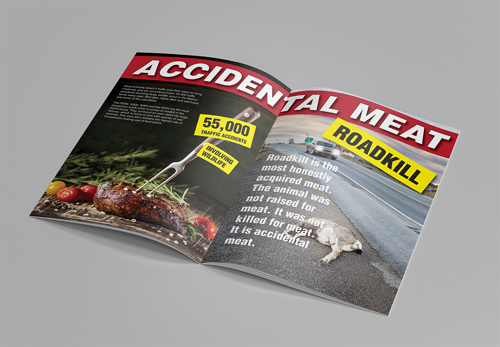
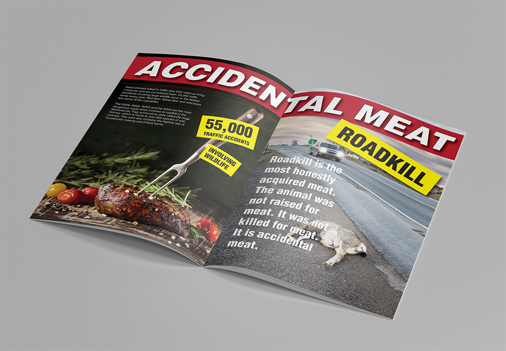

Meat Market
Data/Statistics:
Dutch consumers eat an estimated 3 kilograms of meat per month.
42% of the Dutch population consumes meat on a daily basis.
81% of the Dutch population consumes meat at least five days a week.
Half a billion animals are slaughtered annually.
30% are marketed for the Dutch market.
70% of Dutch meat is shipped abroad.
Questions:
Where does this desire for meat and its overconsumption come from?
Why does an average Dutch dinner have to contain meat?
Why do the Dutch eagerly consume pigs and cows, but balk at the idea of consuming veal or horse?
Historical Turning Point
In 1944-1945, a German blockade cut off food and fuel, resulting in famine, known as the Hunger Winter, during which 4.5 million people were affected, and as many as 20,000-25,000 died. After the war and into the 1950s, Dutch eating habits shifted, and meat was associated with prosperity. Meat was now consumed daily, rather than only on festive occasions.
Supermarket Monopoly:
- The link between the consumer, local farmer and butcher is broken.
- Six chain stores control the entire market.
- One type of distribution system dominates the market, ensuring a uniform and fairly limited range of products.
Fear of Meat / Meat Alienation
Packaging distances customers from once-living animals and the processes of industrialised slaughter. We purchase what looks appealing, not the reality behind the meat industry. Chicken becomes chicken sausages, chicken nuggets, and even chicken nuggets in the shape of dinosaurs. Through this metamorphosis, we teach children that meat comes in playful shapes far removed from its origin.
Hunger Persists:
- The Netherlands ranks 5th worldwide in terms of wealth.
- 35,000 Dutch households are dependent on food banks for survival.
- The Dutch throw away up to 20% of the food they purchase.
Taboo / Things We Don’t Normally Like To Eat:
- Roadkill
- Cute, cuddly and innocent baby animals
- Animals we identify with
- Pets
- Vermin or animals in overabundance such as pigeons, mice or rats
Marginalised Meat:
- Every year, 200,000 geese are shot at airports such as Schiphol.
- 90% of these shot geese remain in the field.
- Muskrats damage our dikes and embankments.
- Old race horses are too expensive to keep alive and are put down.
- Pigeons are present in large numbers. Their droppings make buildings dirty and clog drainage gutters.
Some meat is taboo, the meat of pets and vermin. Various species are considered pests. They are shot and killed for various reasons, but all have in common that many people do not consider them consumable. Though these unwanted animals are not killed for their meat, they are killed nonetheless. By not consuming these animals, we are creating even more waste.
Accidental Meat
Dead animals killed in traffic lose their value as living creatures and are considered trash. 55,000 traffic accidents involving large wildlife occur in the Netherlands every year. Red deer, fallow deer and wild boars are some of the casualties. The N206, N302, N304 and the N344 are the most dangerous roads when it comes to roadkill in the Netherlands. They surround an area called De Hoge Veluwe, which is home to over 600 species of wild animals. This area also contains the highest rate of households making use of food banks.
- Roadkill is the most honestly acquired meat.
- The animal was not raised for meat.
- It was not killed for meat.
- It is accidental meat.
Need for Meat
We do not want to know that animals have suffered. This behaviour of denial is typical of addicts. Eating meat is a pleasurable experience; it gives us a satisfying feeling. Hypoxanthine, inosinic acid and guanylic acid, chemicals that are present in meat, all stimulate the central nervous system. They have a very similar chemical structure to that of caffeine in coffee or theobromine in cacao, and thus can cause similar effects.
Craving for a steak/burger in the evening is similar to craving for your daily cup of morning coffee. This can be seen in a MRI scan of the amygdalae in your brain. The amygdalae processes memory, decision making and emotional reactions. When an alcoholic is confronted with imagery of alcoholic drinks the amygdalae lights up. Based on the strong reactions in the amygdalae towards meat imagery, we can conclude that some individuals can experience an addiction towards meat.
Toxic Meat
We consume 3 kg of meat every month. When 2 kg or more consists of red meat or processed meat, you are at an increased health risk. Red meat carries natural irons; too much heme iron damages your intestines and can lead to cancer.
Nitrates and nitrites are added to processed meat; bacon, ham, sausages, salami, and burgers. They add a salty flavour and improve the appearance of meat by giving it a red or pink blush. They are used in order to preserve the meat and prevent the growth of the deadly botulism bacterium. However, nitrates are toxic in high amounts. Your body is able to break down up to 20 grams daily (2 slices of sandwich meat) of the toxic nitrite present in processed meat without any resulting damage to your system. Heme iron and nitrite are found only in red and processed meat. White unprocessed meat (chicken, turkey or fish) are free of additives and cause no increased risks.
Conclusion:
We prefer to eat meat with increased health risks wrapped in plastic instead of fresh, healthy meat from animals who lived in the wild, who were never raised or killed for their meat and were never stuffed with antibiotics or other chemicals. By turning animals into the unrecognizable supermarket products that are no real representation of the animal itself, we strip away the layer of cultured nostalgia we project on them. At the same time, we waste meat from healthy and consumable animals because we deem it socially unacceptable. Seen as repulsive, these animals have lost their value to us both as living creatures and as a potential food source. Meanwhile, the number of households dependent on food banks keeps increasing.


 
